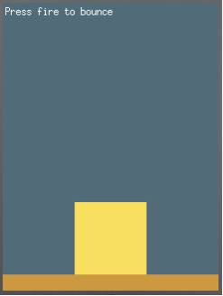

This program tests simple graphics on the phone, catching a key event and adding some action.

This example is included in the MoSync SDK installation in the /examples folder. For information on importing the examples into your workspace, see Importing the Examples.
Pressing FIRE bounces the yellow block.